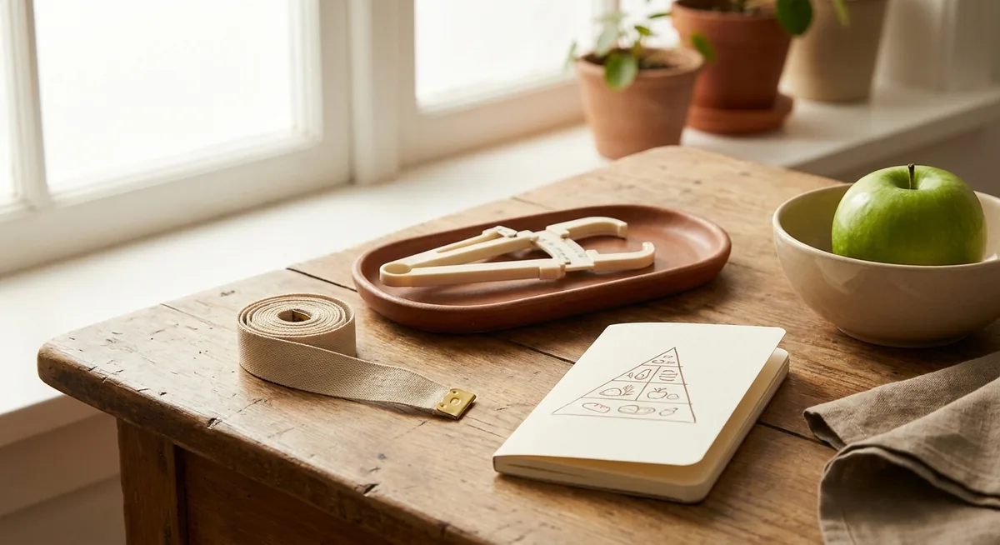
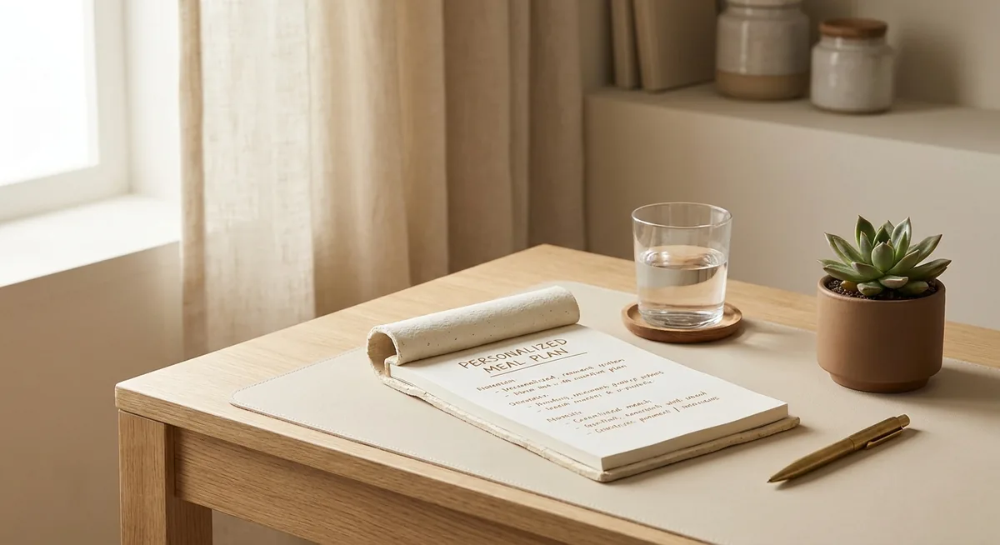
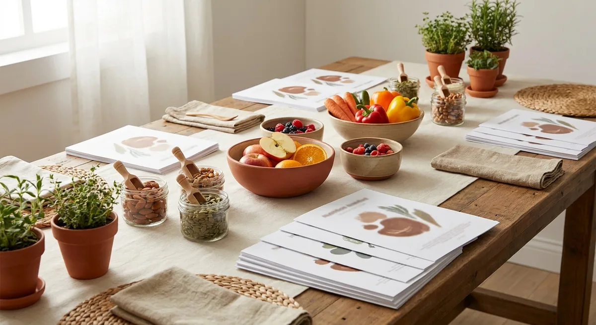
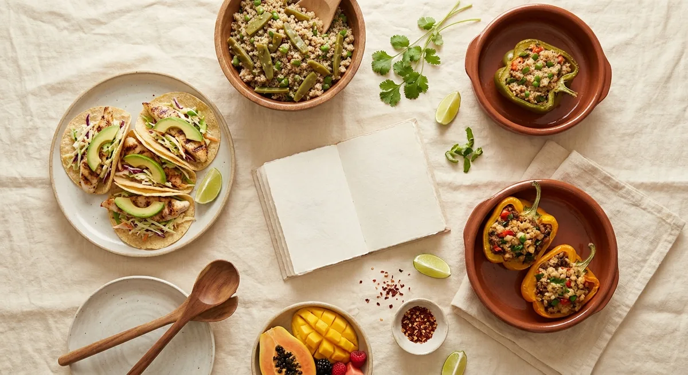

Servicios de nutrición,
salud y calidad de vida.
Cada servicio está diseñado para generar impacto real y medible en el bienestar de tu equipo.
Evaluación del estado de nutrición y calidad de vida
El punto de partida de cualquier programa exitoso es conocer la situación real. Aplicamos una evaluación integral que nos da el panorama completo para diseñar una intervención efectiva y medible.
- Indicadores antropométricos (peso, talla, pliegues, perímetros)
- Indicadores alimentarios
- Indicadores clínico-nutricios
- Calidad de vida y calidad de sueño
- Nivel de conocimiento en alimentación


Consultas personalizadas
Cada persona es diferente. Nuestras consultas individuales crean planes de alimentación que funcionan con el estilo de vida, posibilidades y contexto de cada colaborador.
- Evaluación del estado de nutrición individual
- Diagnóstico del estado de nutrición
- Consejería nutriológica y de calidad de vida
- Plan de alimentación individualizado y adaptado
- Monitoreo y reevaluación periódica
Sesiones educativas grupales
El conocimiento transforma. Nuestras pláticas y talleres están diseñados para que los colaboradores y el personal de comedores adquieran herramientas prácticas que puedan aplicar en su vida cotidiana.
- Pláticas y talleres para colaboradores
- Talleres especializados para personal de comedores
- Temas adaptados a la industria y contexto de cada empresa
- Material de apoyo incluido


Diseño y cálculo de menús saludables
Diseñamos menús saludables, atractivos para el comensal, con ingredientes locales, accesibles y aceptados culturalmente. La preparación queda a cargo del comedor de tu empresa.
- Opciones de desayunos, comidas, cenas y refrigerios variados
- Ingredientes locales, accesibles y de temporada
- Entregable: recetario virtual completo
Ferias de la salud
Participación en ferias de la salud empresariales con evaluaciones nutricionales, actividades interactivas y orientación profesional para los colaboradores.
Servicio de alimentación — A tu mesa
SENUSA prepara y entrega directamente los alimentos saludables en tu empresa. La solución más completa para empresas que no tienen comedor propio. Ver detalles →
¿Cuál servicio necesita tu empresa?
Hablemos. Te ayudamos a identificar el mejor punto de partida.
Solicitar propuesta gratuita